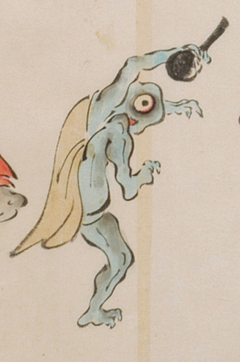

一つ目の化物。茶色の着物を引っ掛けている。肌は青く、頭は禿げて、頭部の大部分を大きな一つの目玉が占めている。鼻はない。手足は3本指で鋭い爪が生えている。右手は黒いしゃもじ形のものを掴んで掲げ、右足を上げて踊っている。
出典：親書誌：U426_nichibunken_0053：化物婚礼絵巻；バケモノコンレイエマキ／日付：2006／資源識別子：U426_nichibunken_0053_0022_0006
Copyright (c)2010- International Research Center for Japanese Studies, Kyoto, Japan. All rights reserved.